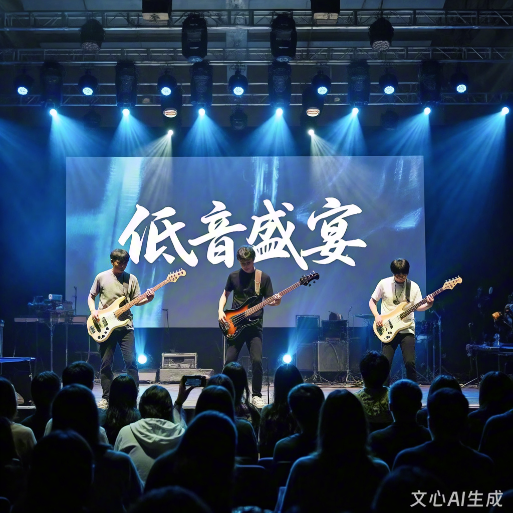

“低音盛宴”是贝斯社自2018年起打造的年度标志性演出，旨在打破“贝斯是乐队‘配角’”的刻板印象，为社员提供专属的“低音舞台”，展示贝斯演奏的多样性与魅力。2025年春季学期的“低音盛宴”以“贝斯无界”为主题，融合摇滚、流行、爵士、国风四大音乐风格，首次加入“贝斯独奏”“贝斯合奏”“贝斯+民乐”跨界表演，打造一场专属于“低音爱好者”的音乐狂欢。
1. 跨界创新表演：与民乐社联合打造《青花瓷》《梁祝》两首“贝斯+民乐”作品——《青花瓷》由电贝斯演奏主旋律，古筝负责和声；《梁祝》由原声贝斯搭配二胡，用低音演绎“化蝶”的深情，打破东西方乐器的边界。
2. 贝斯独奏专场：5名优秀社员将带来“贝斯独奏秀”，涵盖不同演奏技巧——有用“ slap 技巧”演绎摇滚的《Seven Nation Army》，有用“点弦技巧”演奏流行的《Lemon》，还有用“泛音技巧”诠释国风的《高山流水》，全方位展示贝斯的演奏可能性。
3. 特邀嘉宾互动：特邀嘉宾阿哲将带来30分钟的“贝斯大师秀”，演奏原创贝斯曲《浪潮》，并在演出后开展“贝斯学习分享会”，现场解答观众关于“贝斯入门”“乐队合作”的问题，还会抽取10名观众赠送签名贝斯拨片。
4. 沉浸式观演体验：舞台设计融入“低音元素”——背景屏循环播放贝斯演奏特写、节奏波形动画；现场设置“低音振动区”（前5排座位配备轻微振动装置，让观众直观感受贝斯的“低频力量”）；演出结束后，开放“贝斯体验区”，观众可近距离接触不同类型的贝斯，由社员指导简单演奏。
“低音盛宴”不仅是贝斯社的年度成果展示，更是对“低音音乐文化”的推广。通过这场演出，我们希望实现三大目标：①让更多人了解贝斯的“主角潜力”，打破“贝斯只能伴奏”的认知；②为社员提供高规格的舞台实践机会，锻炼独奏、合奏能力，积累演出经验；③搭建“校园音乐交流平台”，吸引更多对贝斯、对摇滚、对音乐感兴趣的同学加入，推动校园多元音乐文化的发展。
图：2024年“低音盛宴”演出现场（2025年将升级舞台灯光与互动装置）